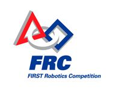
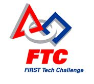
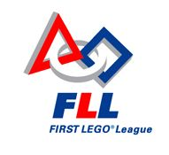
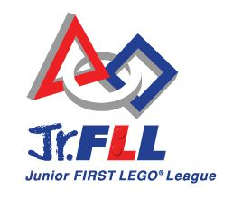
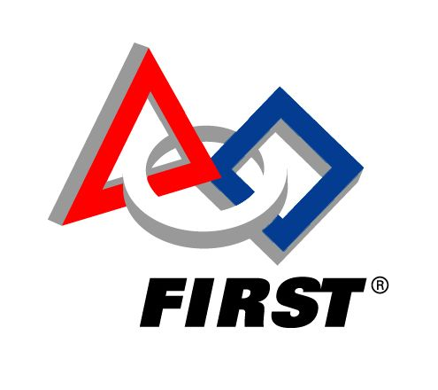

|
What is FIRST?
Learn more about this truly unique organization with a look through an overview, its leadership, its various programs, game history for the Robotics Competition, and its awards and scholarships. More detailed information can be found on the official FIRST website.
250,000+ students
22,600 teams
20,800 robots
68,000+ mentors
33,000+ event volunteers
Read more about the impact of FIRST here.
|
 |
|
Overview: Vision and Mission FIRST (For Inspiration and Recognition of Science and Technology) is a non-profit organization founded in 1989 and based in Manchester, New Hampshire that fosters the appreciation of science, engineering, technology, and innovation in youth all over the world. Founder Dean Kamen aspires to fulfill his vision "to create a world where science and technology are celebrated... where young people dream of being science and technology heroes." Thus, this organization has embarked on a mission "to inspire young people to be science and technology leaders, by engaging them in exciting mentor-based programs that build science, engineering and technology skills, that inspire innovation, and that foster well-rounded life capabilities including self-confidence, communication, and leadership." FIRST also runs by a policy of "gracious professionalism," which emphasizes quality workmanship, respect, and kindness.
|
|
FIRST Leadership
FIRST would not exist if it were not for a team of ambitious, hard-working individuals that make up the organization. Information about the FIRST structure can be found on the official website. Here are a few of the leaders:
|
FIRST Programs
To achieve its mission, FIRST organizes several programs for students of different ages. Below are short summaries (taken from the appropriate FIRST websites found below) about each competition:

|
FIRST Robotics Competition
"FIRST Robotics Competition (FRC) is a unique varsity sport of the mind designed to help high-school-aged young people discover how interesting and rewarding the life of engineers and researchers can be. The FIRST Robotics Competition challenges teams of young people and their mentors to solve a common problem in a six-week timeframe using a standard "kit of parts" and a common set of rules. Teams build robots from the parts and enter them in competitions designed by Dean Kamen, Dr. Woodie Flowers, and a committee of engineers and other professionals."
More information about FRC can be found here.
|
|  |
FIRST Tech Challenge
"The FIRST Tech Challenge (FTC) is a mid-level robotics competition for high-school students. It offers the traditional challenge of a FIRST Robotics Competition but with a more accessible and affordable robotics kit. The ultimate goal of FTC is to reach more young people with a lower-cost, more accessible opportunity to discover the excitement and rewards of science, technology, and engineering."
More information about FTC can be found here.
|
|  |
FIRST LEGO League
"FIRST LEGO League (FLL) is an exciting and fun global robotics program that ignites an enthusiasm for discovery, science, and technology in kids ages 9 to 14 (16 outside of the U.S. and Canada). Each year FLL teams embark on an adventurous Challenge based on current, real-world issues. Guided by a team coach and assisted by mentors, the kids research and solve a real-world problem based on the Challenge theme, present their research and solutions, and build an autonomous robot using engineering concepts."
More information about FLL can be found here.
|
|  |
Junior FIRST LEGO League
"Junior FIRST LEGO League (Jr.FLL) is an exciting opportunity for the youngest budding scientists. It encompasses the core concepts of all FIRST programs to inspire, excite, and introduce kids to the wonders of science, technology, and engineering. The goal of Jr.FLL is to provide an experience that will capture young children's inherent curiosity and creativity and direct it toward discovering the possibilities of improving the world around them through understanding, thought, planning, and technology."
More information about Jr.FLL can be found here.
|
|  |
FIRST Place
"FIRST Place is an innovative and creative learning and development program designed to let everyone discover and explore all types of science, math, and technology on their own terms and in an energetic environment. We offer a wide variety of hands-on programs that have real-world applications and are relevant to students and teachers alike."
More information about FIRST Place can be found here.
|
Game History
FIRST created its first Robotics Competition game in 1992 and has challenged thousands of teams every year since.
Take a look through all of the games here.
|
Awards and Scholarships
FIRST rewards Robotics teams in every reginonal and Championship with judged awards. Awards we've won can be seen here, and detailed information regarding awards (including a list, criteria, etc.) can be seen here.
Scholarships are also offered to FIRST students! More details can be found here.
|
|